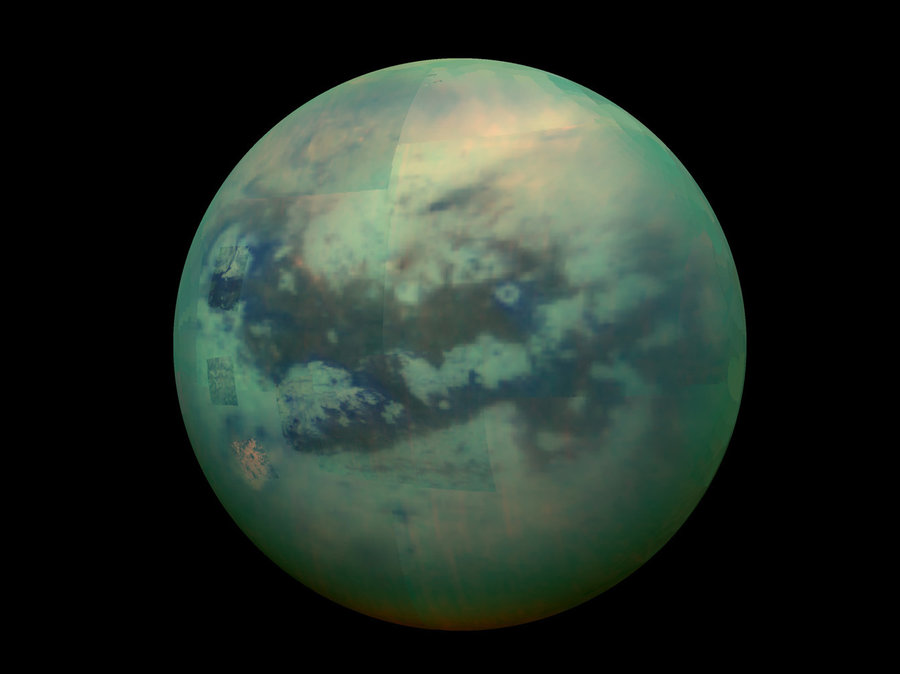

- It has 62 moons in total
- IIt's the farthest planet to be discovered with the naked eye
- Saturday was named after Saturn
- It's the only planet with a density lower than water, It can float in a bathtub!

Saturn

Saturn's Rings

Saturn's largest moon, Titan